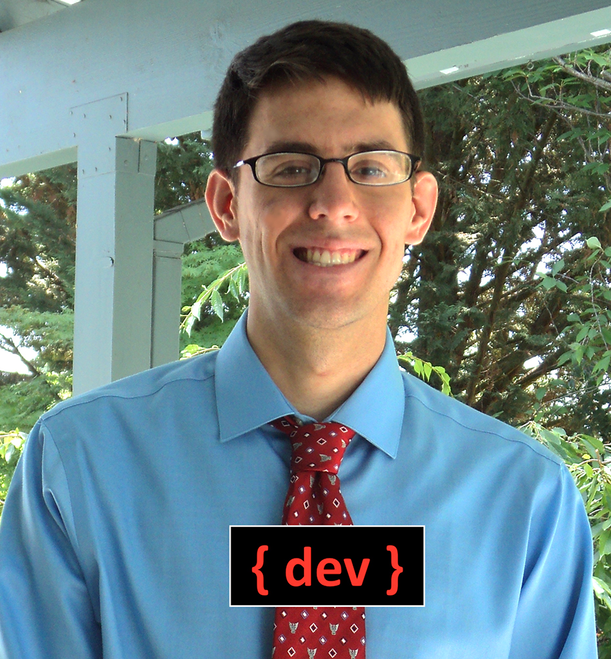

| HOME ABOUT ME PROJECTS CONTACT |

|  |
About Me I started my academic career at New Mexico Technical Institute, and then finished up at Southern Oregon University. I graduated with a Major in Computer Science and a Business Administration Minor. I'm a problem solver who likes programming and data. My current areas of expertise are in C, C++, HTML, Python, some Java and JavaScript. Other languages I've worked with are C#, MySQL, XAML, PHP, Flex, Bison and Haskell. If you live in Portland, Oregon, I'd love to hear about any opportunities or projects you might have. Here's my full resume. Also, I like cats. |
|---|
|
Anything that I assigned to Mark, he has finished with impeccable quality and an enthusiastic attitude. Mark is an incredibly talented, hardworking, intelligent young man and would be a fantastic and valuable addition to your team. |
|
Elizabeth Parkhurst, Assistive Technology Specialist |